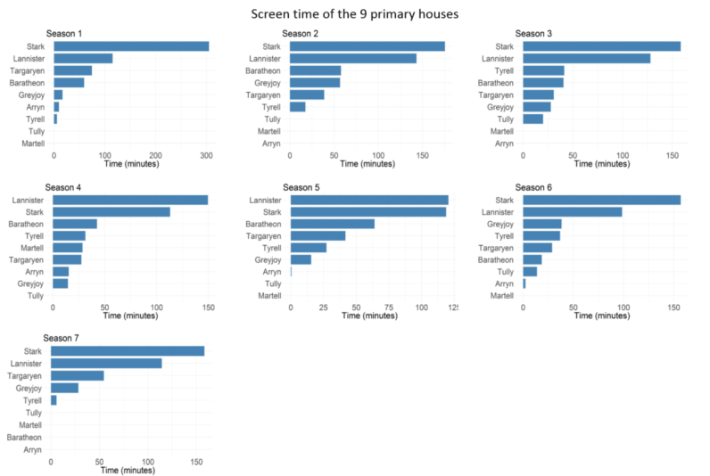

Data analysis of Game of Thrones determines who really is the main character
By John Doe | Decempber 08 2017 12:08
Game of Thrones has become one of the most epic TV series ever produced and one of the most illegally downloaded shows as well. These type of shows move the needle and that’s the reason why Jeff Bezos wants Amazon to create its own ‘Game of Thrones’.
It’s popularity has been amazing, especially considering it’s massive cast! Hundreds of characters have appeared on screen, with weird made-up names which most viewers forget as soon as they’ve heard them. We all know our favorites, but who among our favorites is the main character? And what house is the most prominent?
Sure, you could just go with your gut, or simply don’t waste your time on tedious questions and just enjoy the show. However, I say, why use your gut when you have data? (And I like tedious questions.)
There are no official datasets from HBO about Game of Thrones, but fortunately one dedicated IMDB user has manually recorded the screen time of each characters by watching each episode scene by scene and noting the time. I’ve built on the user’s selfless sacrifice to create a dataset of the screen time for each GoT character.
DATASET
The IMDB list consists of 200 characters in terms of screen time (minutes and seconds format). I extracted this data and selected only the top 100 characters for this study. The time format was converted to numeric format in the final dataset.
OBJECTIVE
Without looking into the fire of the Lord of Light, I’ll use good old bar charts to visualize the screen time of the characters and their houses. Here are the goals of this extremely scientific study:
- Finding out the screen time of the top 100 characters
- Screen time of the top 10 characters in each season
- Screen time of the nine primary houses
- Screen time of the nine primary houses in each season
- Given below are the visualizations and results of the analysis:
Given below are the visualizations and results of the analysis:
1. Screen time of the top 100 characters
It looks like that Jon Snow and Tyrion Lannister are the two most important characters of the epic fantasy series, being almost tied in screen time at the top. After the delightful duo follows the titanic trio — Daenerys Targaryen, Sansa Stark and Cersei Lannister — with their impressive screen time, which shouldn’t really come as a surprise. Awesome characters and great actresses. The average screen time of the top 100 characters stands at 7 minutes and 45 seconds, but our favorite five go way beyond that.
What’s really interesting about this list is that Ned Stark (played by Sean Bean) is among in the top 15 after seven seasons, despite the fact *SPOILER* he’s killed off in the first season, in episode 9. No wonder his death was a big blow to the fans after investing so much time in one of the most lovable characters. (By the way, there’s a fan theory that suggests Ned Stark might still be alive!).
2. Top 10 characters in terms of screen time, by season
Here you can see a visualization of the screen time of the top 10 character by season. Jon Snow certainly seems to be a strong contender for the main character of GoT as he’s always in first or second place — except for season 2 where he doesn’t even come close. Tyrion and, surprisingly, Theon Greyjoy are the biggest characters of that season.
However, Jon’s character has only grown since then and has evolved to become one the most vital characters in the last two seasons. Another major character, Daenerys Targaryen (Mother of Dragons, Queen of blahblah, etc.), also started out slow as she didn’t even feature in the top 10 in season 4.
3. Screen time of the nine primary houses
Here you can see the nine most important houses of Westeros. Unsurprisingly Stark and Lannister leave all the other houses in the dust. However, it should be noted that Jon Snow *SPOILER SPOILER SPOILER* was categorized as a Stark till the last season, where he’s counted as a Targaryen (aunt sex).
This visualization shows that Starks, Lannisters and Targaryens have received the highest amount of screen time while Arryn and Martell have the least. The average screen time for these houses remains close to 12 minutes.
4. Screen time of the nine primary houses by season
This chart shows that all every season, excluding 4 and 5, has given the Starks the most screen time. The Lannisters got the lime light in the above-mentioned seasons.
Although Daenerys from the house Targaryen is one of the most important characters, her house never got into the top three spot apart from season 1 and season 7. Interesting to note that the last season revolves around only five houses.
CONCLUSION
This study shows the screen time of the important characters and the associated houses in the Game of Thrones TV show. We saw that Jon Snow has been the primary character all along and the house Stark has enjoyed most of the screen time in comparison to other houses. So it doesn’t matter who’s your favorite, the data says it should be Jon Snow and house Stark!
If you would like to perform analysis please feel free to download the datasets and check out the `R` code used in this study from the following GitHub link.
Note: Visualizations were created via ggplot2 and R.
Source : https://thenextweb.com